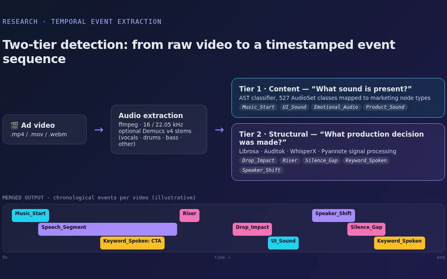

AI / Research
The Temporal Architecture of Video Conversion
Treats short-form advertising videos as sequences of timestamped events instead of static content. A two-tier pipeline asks “what sound is present?” (an AST classifier whose 527 AudioSet classes are mapped to marketing node types) and “what production decision was made?” (signal processing for drops, risers, silence gaps, tempo changes, speech and spoken keywords). Per-batch results are merged into one chronological event sequence per video for downstream analysis.
Research · private repository